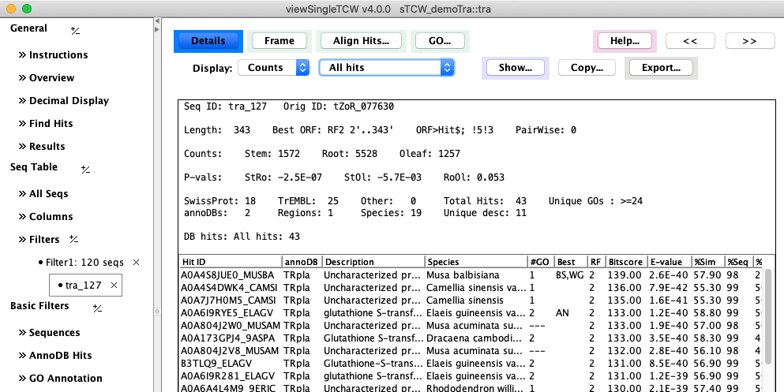
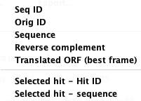
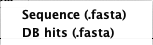
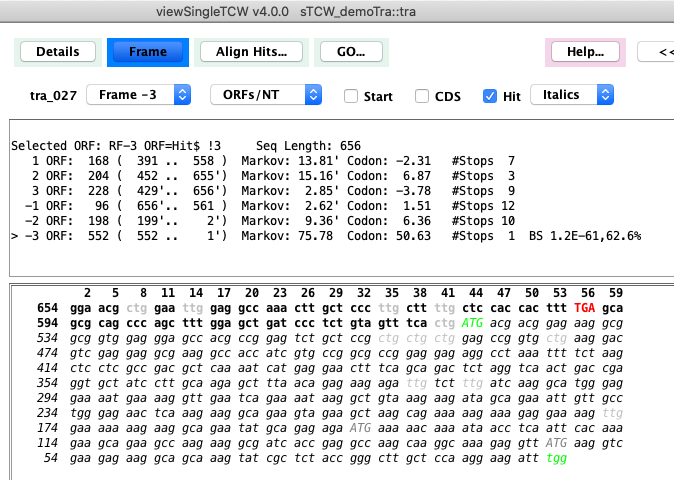
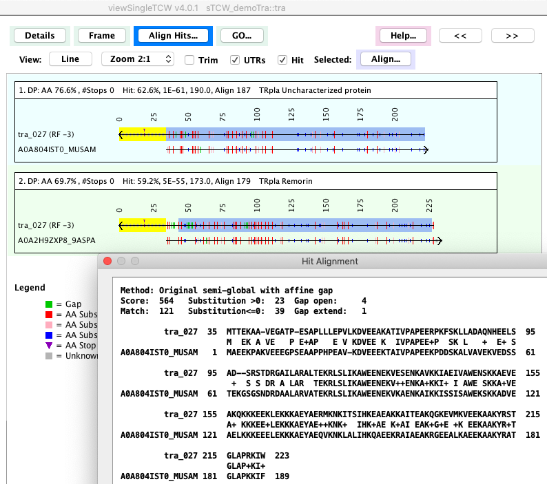
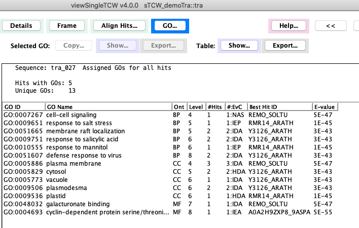
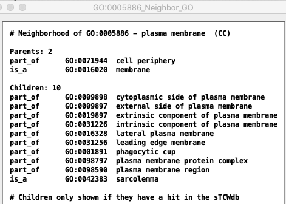

|
viewSingleTCW - View and Query Single Species
Sequence Details
The Sequence Detail view can be displayed from the Seq Table by selecting a sequence followed by
View Selected Sequence.
Details
The following image is an example of the detail page.

Second row of options:
- The Counts pull-down can change
the Counts to TPM or Replicates.
- The All hits can be changed to display only Best Hit, Best per AnnoDB,
Unique Species, Distinct Regions.
- The Copy... and Export... options are shown on the right.
| Copy...

| Export...

|
|
The Start and Stop are highlighted in Green. The location of the best
hit is shown in italics, where it forms a perfect ORF in this example.
By default, the assigned "Best ORF" will be shown, but can be changed with the Frame pull-down.
The TCW algorithm uses hit information, 5th-order Markov score, and start/stop codons to compute the best frame.
| 
|
|
There are options to show:
- Best Hits
- DB Hits: Selected Hits
- DB Hits: Selected hits in all frames
Dynamic programming is used to compute the alignment. The Hit: numbers are
from the search program (BLAST or DIAMOND), along with
the blue highlighted region. The yellow highlight is the UTRs computed by TCW.
Selecting a hit followed by Align... shows a multi-line sequence view.
|

|
| The
image on the right shows the union of the GO terms for sequence tra_027.
Most of the columns are obvious, except the following two:
Level: A GO term can be at multiple levels in the tree. This number is its maximum level.
#:EvC: This shows evidence code for the protein being assigned the GO term. The number before an Evidence code is the number of hits that were assigned to the GO with the corresponding evidence.
|

|
| Selecting a GO term followed by Show... Seq Hits - Assigned provides details of the hits that are assigned the GO.
| 
|
| Selecting a GO term followed by Show... GO - Neighbors
provides the list of the GO's parent and children.
| 
|
|


{kind=link}
{kind=link}
{kind=link}
{kind=link}
{kind=link}